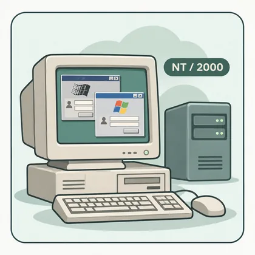
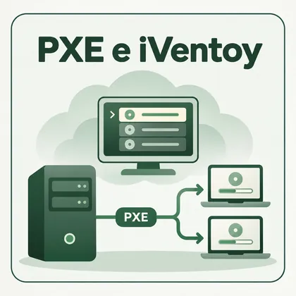
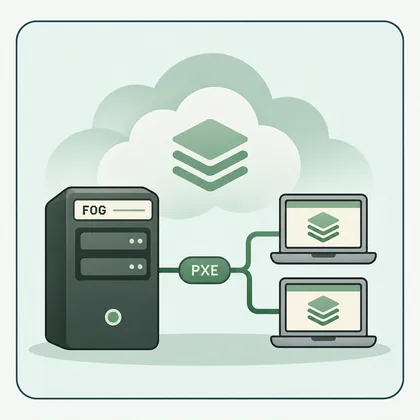
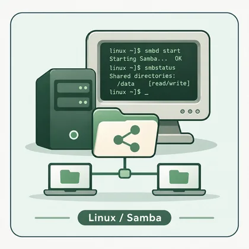

Escolher um tema do laboratório

Retro-SIMH — 1977 a 1982
Sete sistemas históricos numa única VM Debian: Altair DOS, CP/M e 86-DOS. Capturas e resultados reais.
Explorar →
86Box — computadores x86 históricos
Emulação de IBM PC 5150 e outras máquinas. BASIC confirmado; DOS, GEM e OS/2 em preparação ou validação.
Explorar →
MS-DOS 1.25, 3.30 e 6.22
Três máquinas virtuais, sistemas entre 1982 e 1994, e capturas de testes reais.
Explorar →
Windows 1.01, 2.1 e 3.11
Três ambientes gráficos históricos instalados sobre DOS em VMs Proxmox, com instalação e execução documentadas.
Explorar →
Windows NT 3.1, NT4 e 2000
NT 3.1 Advanced Server instalado (rede por resolver); NT 4.0 e Windows 2000 com testes funcionais; Windows Server 2008 R2 instalado para experiências futuras.
Explorar →
PXE e iVentoy
Arranque pela rede com biblioteca de imagens ISO; inclui resultados observados e limitações encontradas nos testes.
Explorar →
FOG Project
Captura e reposição de imagens de computadores por rede. Artigo teórico: instalação no Home Lab ainda não realizada.
Explorar →
Linux — Red Hat 7.1 + Samba
Servidor Linux de 2001 com Samba 2.0.7: partilha de ficheiros testada numa máquina Windows NT 4.0.
Explorar →
SuSE Linux 9.0
Instalação pelo YaST, rede, SSH e Samba com Windows 2000. Resultados e limitações documentados.
Explorar →